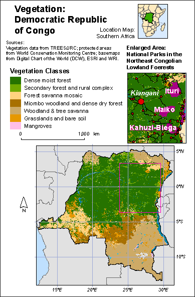

Web Mapping Quickstart
We are:
Lyzi Diamond: @lyzidiamond or ldiamond@ccsfgis.org.
Stephanie May: @mizmay or smay@ccsfgis.org.
.
Lyzi Diamond: @lyzidiamond or ldiamond@ccsfgis.org.
Stephanie May: @mizmay or smay@ccsfgis.org.
Who are you? Why are you here?
Course Objectives: By the end of this class you should be able to....
Think critically about web maps
Peek into the cloud
Know where to start
What we'll cover in this class:
Session 1: Web Mapping Concepts
Session 2: Web Mapping Platforms and Projects
Session 3: Web Mapping from Scratch
Session 4: Advanced Web Mapping
What we won't cover:
GIS and data wrangling
Web servers and what is required to set up a system for collecting data
Software development
Sound good? Let's begin!
There are print maps...
(maps on paper)
And there are digital maps...
(maps on computers)
And then there are web maps...
(maps on the internet)
But what is a web map?
A web map is a map displayed on the web.
An embedded image in a page is a web map. (But download this PDF does not a web map make.)
Let's talk about how we put maps online.
Any guesses?
HTML!
HTML is the magical language of websites.
HTML, along with CSS and JavaScript, make up most of what you see on the web.
If a website is a sentence, HTML is the noun, CSS is the adjective, and JavaScript is the verb.
The other element of a web map is geographic data.
There are many geographic data formats.
They typically link shapes and locations with attributes, and sometimes encode styling.
Now, what data formats might you encounter when making a web map?
By a show of hands, we'd like to know which of these you have encountered already:
You might also encounter geospatial databases like PostGIS or Arc Server that store and serve data dynamically.
All of these formats find themselves in the web mapping conversation. Often because you need to convert data between them.
When it comes to data and web mapping, another crucial part of the conversation is OpenStreetMap (OSM).
What is OpenStreetMap?
... a crowd-sourced reference map
"The Wikipedia of maps"
... a community of mappers
Now including you!
Exercise 1: OSM
Go to OpenStreetMap.org.
Search for a place or an address.
Find the best match from Nominatim.
Click on it to zoom there.
Toggle through the different reference layers.
Each emphasizes a different set of mappable features.
Create an account...
iD: just click edit up in the corner︎
JOSM
But what to edit? Suggestions:
Trace some buildings
Add some addresses
Add some POIs (points of interest)
To learn how to tag anything you add to the map: wiki.osm.org / wiki / Map_Features
Am I doing it the right way? Read about wiki.osm.org / wiki / Good_practice
Most important rule is to make wiki.osm.org / wiki / Good_changeset_comments
Let's give it a try!
Time for advanced maneuvers.
Play MapRoulette
- OR -
Do some HOT tasks (Humanitarian OSM Team)
You know when OSM gets really cool?
When you get outside!
Important things to know!
ONE. No copying from Google products!
TWO. OSM is licensed under the Open Database License. There are certain restrictions and requirements when using or modifying OSM data.
Best place to learn more is at the OpenStreetMap #Editathon coming up on November 15.
OSM portion of this presentation borrows from OSM 101.
BREAK
Apart from the OSM project itself, why is OSM so crucial to web mapping?
Because getting data is hard.
But OSM makes it easy!
You can download the whole planet from OpenStreetMap for free!
(that drawing by Meghan Hade)
Planet.osm
(This is not recommended. The file is huge.)
But: If you see geodata with the file extension .osm, don't panic.
OSM has its own data format.
Though it is not commonly used in GIS, an increasing number of tools support .osm files to a degree, including ArcGIS and QGIS and CartoDB.
The planet is huge, but you can download a small portion of the planet via a bounding box.
Thankfully, you can also download metro regions as shapefiles via Metro Extracts. (Here's a help guide.)
Other great sources for free data:
Open data portals!
Government agencies create and maintain lots of geodata.
Sometimes they put it online for download on an open data portal.
Open data portals typically have shapefile data and tabular data (like in CSVs).
Even outside of open data portals, the Internet at large is full of geodata.
Now that we've talked about data formats and getting data, we're basically ready to make a map, right?
What tools do people use to make quick and dirty web maps?
LET ME STOP YOU RIGHT THERE!
It's cartography time!
In print or on the web, maps are information design.
Cartographers have been thinking about how to do that effectively in print for hundreds of years.
Too often in web mapping, design decisions are constrained by the tools available.
"Cartographers limit themselves – because of a lack of software skills or a client’s desired final product – to using pre-fabricated tools for Web map design (e.g., Google Maps, Esri’s ArcGIS Online). By the time data-organization and design decisions are considered, the potential efficacy of the map’s communication is already grossly constrained by the limitations of the tool chosen." - Ian Muehlenhaus in Going Viral: The Look of Online Persuasive Maps
Developers don't understand mapping and mappers don't know how to write code.
We're gonna change all that. Starting next time, we will talk more about magical languages of web mapping introduced earlier.
(Don't be intimidated!)
For today: some vocabulary and key concepts in mapping to help us think more critically about web maps.
There are several types of maps, but we can mostly break them down into two categories:
Thematic maps
and Reference maps.
"Thematic maps are data maps of a specific subject or for a specific purpose. Statistical thematic maps include a variety of different map types such as choropleth or shaded maps, dot maps, proportional symbol maps, and isarithmic maps." - U.S. Census Bureau
Some examples:
"A reference map is a map that emphasizes the geographic location of features. ... For these maps, the goal is to display a lot of different kinds of information without drawing the reader's attention to any one theme of information more than any other theme." - Esri Mapping Center
Why might you use a reference map?
Wayfinding
Transit
Navigation
Topographic
All of these map classes are well described in print cartography, but they have corollaries in web cartography as well.
Historically, web mapping has evolved without much cartographic theory.
There was Google, and then there were mashups....
... which led to an explosion in special thematic maps...
... that defy classification.
I am not fond of heat maps.
The term "heatmap" is imprecise. Isopleth? Point density? Interpolation?
On the web it usually means kernel density and usually just shows population density.
Where the points are sparse or coincident, kernel density generates a meaningless blur:
 |
 |
Common JavaScript libraries that generate "heat maps" dynamically use zoom level as a proxy for kernel size, which makes no sense analytically.
The default color scheme is horrid. (Nicknames: "Tacky Angry Rainbow" and "Angry Fruit Salad".)
Tacky Angry Rainbow
Angry
Fruit
Salad
Fruit
Salad
They arise from demand from people who don't know what they are doing, but know they want to show a lot of points on a map.
Alternative: clustering.
Entirely different (although they look similar): dot density maps.
Someone clever putting a lot of points on maps quite artfully: Eric Fischer.
We should still strive for sound cartography in mashups.
A few high level concepts from cartography, which is a visual enterprise:
1. Visual variables
2. Visual hierarchy
|  | BAD ← GOOD → |  |
3. Visual argument
An important concept for web cartography is "screen real-estate".
- Space is scarce
- Mobile vs. desktop
- Fluid vs. compartmentalized layout
Panning and zooming, which we will talk more about next time, are a way around all of this but.... for some maps it is overkill & potentially a cop-out.
The main thing the web brings to cartography is interactivity, which can take many forms.
In web design and development, people make entire careers out of designing for interactivity.
The field is called UI/UX, which is shorthand for user interface and user experience.
It means you think through how people who visit your site will interact with it, and you design the interface to guide the user toward the experience you want them to have.
UI/UX is a really important component in web mapping.
(Project managers creating government web portals for geospatial data, I am talking to you.)
For this reason, while it makes sense in print cartography to talk about map readers, in web cartography we talk about map users.